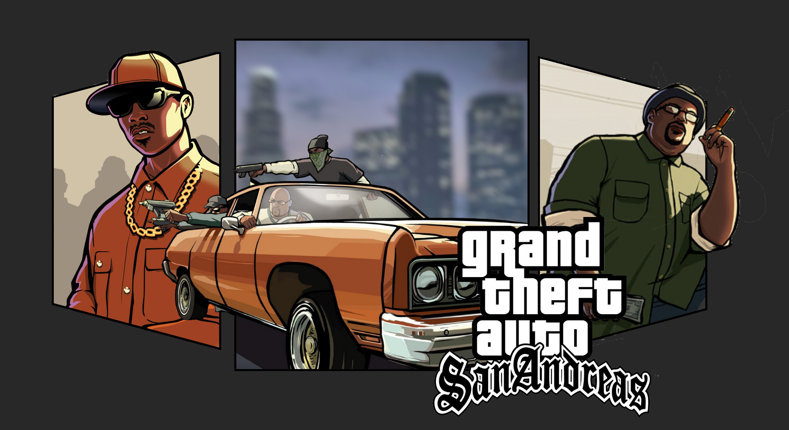
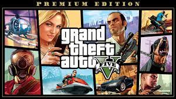

Descripción del juego
¿Grand Theft Auto: San Andreas es un videojuego de acción-aventura de mundo abierto desarrollado por Rockstar North y publicado por Rockstar Games. Fue confirmado oficialmente por la mencionada Rockstar Games a principios de marzo de 2004, y su fecha de lanzamiento tentativa se programó para el 19 y 22 de octubre de ese año para América del Norte y Europa. Distribuido por Take-Two Interactive, San Andreas fue lanzado originalmente para PlayStation 2 el 26 de octubre de 2004, aunque posteriormente se publicaron distintas versiones, tanto para videoconsolas de sexta, séptima y octava generación, así como ordenadores, y teléfonos inteligentes.

¿Como se descarga el juego?
Lo primero que tienes que hacer es entrar en la página web oficial de Rockstar Games Social Club desde este enlace. Después busca el apartado Rockstar Games Launcher en la página principal y haz clic en el botón Descargar para Windows. En la siguiente ventana vuelve a pulsar en el botón Descargar para Windows.
¿Aún estas dudando si comprar el juego o no?
Pincha en el enlace que te dejamos ahí abajo y veras las opiniones de la gente.
¿Sabes que nuestro juego es recomendado por los 99% de los Youtubers que se dedican a los videojuegos?
¡Corre a Youtube y mira si tu Youtuber favorito lo ha jugado!
Ultimas Noticias

Con los inminentes lanzamientos de PlayStation®5 y Xbox Series X|S a finales de este mes, las versiones de PlayStation®4 y Xbox One de Grand Theft Auto V y Red Dead Redemption 2 podrán jugarse en estas nuevas consolas mediante la retrocompatibilidad, así como las versiones más recientes de L.A. Noire (incluida la versión para PlayStation®VR de L.A. Noire: The VR Case Files) y varios títulos clásicos de Rockstar.